사회조사분석사-2급 (2014-08-17 기출문제)
1과목: 조사방법론 I
1. 과학적 조사(scientific research)의 특성에 대한 설명과 가장 거리가 먼 것은 무엇인가?
- 과학적 조사는 경험적으로 검증 가능해야 한다.
- 과학적 조사를 통해 얻어진 지식은 바뀌지 않는다.
- 조사방법과 과정이 같으면 같은 결론을 얻을 수 있어야 한다.
- 과학적 조사는 최소한의 변수를 이용하여 최대한의 설명을 하려고 한다.
(정답률: 81%)

2. 면접조사의 성패를 좌우하는 것으로서, 면접자와 응답자 사이에 친밀한 관계가 성립되는 것은 무엇인가?
- 라포(rapport)
- 캐어 묻기(probing)
- 신뢰도
- 심층면접
(정답률: 78%)
3. 폐쇄형 질문의 장점과 가장 거리가 먼 것은 무엇인가?
- 대답이 표준화되어 비교가 가능하다.
- 질문의 의미가 명확하게 전달된다.
- 쟁점이 복합적일 때에도 이용 가능하다.
- 분석이 용이하여 시간과 경비를 절약할 수 있다.
(정답률: 74%)
4. 실험설계를 위하여 충족되어야 하는 조건과 가장 거리가 먼 것은 무엇인가?
- 실험변수의 조작가능성
- 인과관계의 일반화
- 외생변수의 통제
- 실험대상의 무작위화
(정답률: 59%)
5. 온라인(on-line)조사의 장점과 가장 거리가 먼 것은 무엇인가?
- 모집단의 대표성
- 조사의 신속성
- 조사비용의 경제성
- 분석의 용이성
(정답률: 78%)
6. 사회조사에서 독립변수와 종속변수에 대한 설명과 가장 거리가 먼 것은 무엇인가?
- 일반적으로 독립변수가 변하면 종속변수에 영향을 미친다.
- 독립변수를 원인변수, 종속변수를 결과변수라고 할 수 있다.
- 일반적으로 독립변수는 종속변수보다 시간적으로 선행한다.
- 종속변수는 하나의 독립변수에 의해 영향을 받는다.
(정답률: 82%)
7. 「80세 이상 노인의 성생활 빈도와 만족도」에 대한 연구를 계획하고 있다. 다음 중 가장 적합한 조사방법은 어느 것인가?
- 면접법
- 관찰법
- 질문지법
- 공식통계법
(정답률: 35%)
8. 귀납법에 관한 설명과 가장 거리가 먼 것은 무엇인가?
- 귀납적 논리의 마지막 단계에서는 가설과 관찰결과를 비교하게 된다.
- 관찰된 사실 중에서 공통적인 유형을 객관적으로 증명하기 위하여 통계적 분석이 요구된다.
- 특수한(specific) 사실을 전제로 하여 일반적(general)진리 또는 원리로서의 결론을 내리는 방법이다.
- 경험의 세계에서 관찰된 많은 사실들이 공통적인 유형으로 전개되는 것을 발견하고 이들의 유형을 객관적인 수준에서 증명하는 것이다.
(정답률: 63%)
9. 다음에서 설명하고 있는 것은 무엇인가?
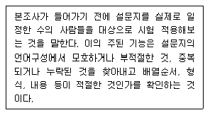
- 1차 조사
- 기초조사
- 사전조사
- 탐색조사
(정답률: 80%)
10. 자기기입식 설문조사에 비해 면접설문조사가 갖는 장점이 아닌 것은 무엇인가?
- 답변의 맥락을 이해할 수 있다.
- 무응답 항목을 최소화한다.
- 조사대상 1인당 비용이 저렴하다.
- 개방형 질문에 유리하다.
(정답률: 78%)
11. 표본조사와 전수조사에 대한 설명과 가장 거리가 먼 것은 무엇인가?
- 표본조사 과정에서 발생하는 비표본오차 때문에 표본조사는 전수조사보다 부정확하다.
- 전수조사는 표본조사보다 많은 비용과 시간이 필요로 한다.
- 경우에 따라서는 전수조사 자체가 아예 블가능한 경우도 있다.
- 모집단이 작은 경우 추정의 정도를 높이는데 전수조사가 더 정밀하다.
(정답률: 71%)
12. 다음 중 관찰자에게 필요한 사항과 거리가 먼 것은 무엇인가?
- 관찰자는 인내심이 있어야 한다.
- 관찰에 관한 기술을 습득할 필요는 없다.
- 주관성을 배제하고 객관성을 유지해야 한다.
- 관찰자는 집단에 동화되지 않아야 한다.
(정답률: 77%)
13. 다음 조사 주체 중 분석단위가 나머지 셋과 가장 다를 것으로 생각되는 주제는 무엇인가?
- 가구소득 조사
- 가구당 자동차 보유현황 조사
- 대학생의 연령 조사
- 슈퍼마켓의 종업원 수 조사
(정답률: 64%)
14. 개인적 분석단위에서 이루어진 조사결과를 집단적 수준의 분석단위로 해석할 때 나타날 수 있는 오류는 무엇인가?
- 생태학적 오류
- 분석오류
- 집단주의적 오류
- 개인주의적 오류
(정답률: 63%)
15. 내용분석에 관한 설명과 가장 거리가 먼 것은 무엇인가?
- 분석대상에 영향을 미치지 않는다.
- 필요한 경우 재분석이 가능하다.
- 양적 내용을 질적 자료로 전환한다.
- 다양한 기록자료 유형을 분석할 수 있다.
(정답률: 68%)
16. 면접조사의 장점과 가장 거리가 먼 것은 무엇인가?
- 우편조사보다 응답률이 높다.
- 신뢰성 있는 대답을 얻을 수 있다.
- 응답자와 그 주변의 상황들을 직접 관찰할 수 있다.
- 면접자의 개인별 차이에서 오는 영향이나 오류를 피할 수 있다.
(정답률: 71%)
17. 다음 중 패널(pannel) 조사의 특징과 가장 거리가 먼 것은 무엇인가?
- 패널조사는 초기 연구비용이 비교적 많이 드는 연구 방법이다.
- 패널조사는 조사대상자로부터 추가적인 자료를 얻기가 비교적 쉽다.
- 패널조사는 조사대상자의 태도 및 행동변화에 대한 정확한 분석이 가능하다.
- 패널조사는 최초 패널을 다소 잘못 구성하더라도 장기간에 걸쳐 수정이 가능하다는 장점이 있다.
(정답률: 71%)
18. 다음 중 결측자료(missing data)의 처리방법으로 가장 적합한 것은 무엇인가?
- 유사사례를 추출하여 그 사례에 기재된 내용을 대체하여 사용한다.
- 결측된 변수의 평균값을 대체하여 사용한다.
- 난수표에서 번호를 추출하여 그 점수를 대체하여 사용한다.
- 결측자료가 50% 이상이 되더라도 원래 수집된 사례수는 유지해야 하기 때문에 그대로 사용한다.
(정답률: 54%)
19. 자신의 신분을 밝히지 않은 채 내집단의 완전한 성원이 되어 자연스럽게 일어나는 사회적 과정에 참여하는 관찰자의 역할은 무엇인가?
- 완전참여자(complete participant)
- 완전관찰자(complete observer)
- 참여자로서의 관찰자(observer as par- ticipant)
- 관찰자로서의 참여자(participant as o- bserver)
(정답률: 66%)
20. 질적 연구가 필요한 상황으로 가장 적합한 것은 무엇인가?
- 관심있는 특정한 변수의 인과성을 규명하고자 할 때
- 특정 문제나 이슈를 탐색할 필요가 있을 때
- 연구가설이 직접적으로 검증되기 어려울 때
- 다중의 독립변수들을 통제할 필요가 있을 때
(정답률: 46%)
21. 2014년에 특정한 3개 고등학교(A, B, C)의 졸업생들을 대상으로 향후 10년간 매년 일정시점에 조사를 한다면 어떤 조사에 해당하는 것인가?
- 횡단 조사
- 서베이 리서치
- 코호트 조사
- 사례 조사
(정답률: 76%)
22. 연구문제의 특징과 가장 거리가 먼 것은 무엇인가?
- 연구문제는 경험적으로 검증이 가능해야 한다.
- 연구문제는 질문형식으로 분명하고 명확하게 진술되어야 한다.
- 연구문제는 사실 혹은 거짓 중의 하나로 판명될 수 있다.
- 연구자가 가진 가치나 가치관이 연구문제의 질과 정직성을 훼손시켜서는 안된다.
(정답률: 55%)
23. 관찰법의 장점과 가장 거리가 먼 것은 무엇인가?
- 조사에 비협조적이거나 면접을 거부할 경우에 효과적이다.
- 조사자가 현장에서 즉시 포착할 수 있다.
- 관찰결과에 대하여 객관성이 확보된다.
- 행위, 감정을 언어로 표현하지 못하는 유아나 동물에 유용하다.
(정답률: 75%)
24. 좋은 가설이 되기 위한 가설의 요건과 가장 거리가 먼 것은 무엇인가?
- 검증 가능해야 한다.
- 입증된 결과는 일반화가 가능해야 한다.
- 사용된 변수는 계량화가 가능해야 한다.
- 추상적이며 되도록 긴 문장으로 표현을 해야 한다.
(정답률: 76%)
25. 다음에서 설명하는 가설의 종류는 무엇인가?
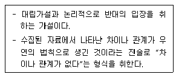
- 귀무가설
- 통계적 가설
- 대안가설
- 설명적 가설
(정답률: 79%)
26. 기술적 조사의 특성과 가장 거리가 먼 것은 무엇인가?
- 패널조사(pannel study)도 여기에 속한다.
- 설명적 조사의 기초자료를 제공한다.
- 표준화된 문항을 사용하여 측정의 일관성을 유지할 수 있다.
- 연구의 반복이 어렵다.
(정답률: 63%)
27. 실험설계(experimental design)의 타당성을 높이기 위한 외생변수 통제방법으로 바르지 않은 것은?
- 제거(elimination)
- 균형화(matching)
- 성숙(maturation)
- 무작위화(randomization)
(정답률: 65%)
28. 어떤 대학의 학생생활지도연구소에서는 해마다 신입생에 대한 인성검사를 실시하고 있다. 이 경우 시간과 비용면에서 효율적으로 조사를 하는데 가장 적합하다고 생각되는 조사양식은 무엇인가?
- 대면적인 면접조사
- 자기기입식 집단설문조사
- 우편조사
- 개별적으로 접근되는 질문지 조사
(정답률: 73%)
29. 질적 연구에 관한 설명과 가장 거리가 먼 것은 무엇인가?
- 연구절차에 유연성이 있다.
- 연구도구로서 연구자가 가진 자질이 중요하다.
- 연구자의 주관성이 개입될 수 있다.
- 개방형 질문과 구조화 면접으로 심층정보를 얻는다.
(정답률: 45%)
30. 다음 설명에 가장 적합한 연구 방법은 무엇인가?
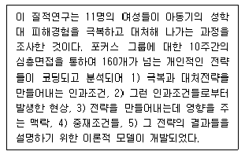
- 현상학적 연구
- 근거이론 연구
- 민속지학적 연구
- 내용분석 연구
(정답률: 44%)
2과목: 조사방법론 II
31. 사회조사에서 발생하는 측정오차의 원인과 가장 거리가 먼 것은 무엇인가?
- 조사의 목적
- 측정대상자의 상태 변화
- 환경적 요인의 변화
- 측정도구와 측정대상자의 상호작용
(정답률: 71%)
32. 다음 척도의 종류는 무엇인가?
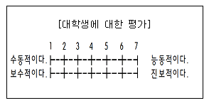
- 서스톤척도
- 리커트척도
- 거트만척도
- 의미분화척도
(정답률: 69%)
33. 확률표본추출법에 해당하지 않는 것은 무엇인가?
- 계통표집(systematic sampling)
- 집락표집(cluster sampling)
- 할당표집(quota sampling)
- 층화표집(stratified sampling)
(정답률: 73%)
34. 특정 변수를 중심으로 모집단을 일정한 범주로 나눈 다음 모집단의 특성이 적절히 반영되도록 정해진 요소수를 작위적으로 추출하는 방법은 무엇인가?
- 유의표존추출방법(purposive sampling)
- 편의표본추출방법(convenience sampl- ing)
- 집락표본추출방법(cluster sampling)
- 할당표본추출방법(quota sampling)
(정답률: 53%)
35. 소시오메트리에 관한 설명으로 올바른 것은?
- 사회적 거리척도로서 집단 간 거리를 측정하는 척도이다.
- 리더십연구와 집단내의 갈등, 응집에 관한 연구에서 사용된다.
- Moreno를 중심으로 발전한 인간과 친환경관계의 측정에 관한 방법이다.
- 소시오메트리의 분석방법에는 소시오메트릭행렬, 지니지수, 집단확장지수가 있다.
(정답률: 56%)
36. 표본오차(sampling error)에 관한 설명으로 올바른 것은?
- 표본의 크기가 커지면 늘어닌다.
- 모집단과 표본의 차이에 의해 발생하는 오류를 말한다.
- 조사연구의 모든 과정에서 확산되어 발생한다.
- 조사원의 훈련부족으로 인해 각기 다른 성격의 자료가 수집되는 경우 발생한다.
(정답률: 65%)
37. 동일한 개념에 대해서 한 시점과 또 다른 시점에서 각각 측정하여 이들 간에 어느 정도로 높은 상관이 있는가를 보고 신뢰도를 평가하는 방법은 무엇인가?
- 내적일관성법
- 재조사법
- 반분법
- 복수양식법
(정답률: 58%)
38. 변수에 대한 설명으로 바르지 않은 것은?
- 변수란 어떤 사상에 대한 계량적 수치가 부여된 속성 또는 상징이다.
- 변수에는 독립변수, 종속변수, 매개변수 등이 있다.
- 독립변수는 매개변수에 영향을 미친다.
- 매개변수는 가설적 변수, 원인적 변수라고도 한다.
(정답률: 46%)
39. 처음에는 소수의 응답자들을 찾아내어 면접하고, 다음 단계에서는 이들이 소개한 사람들을 면접하는 방식으로 표본크기를 늘려 가는 표본추출방법은 무엇인가?
- 편의표집(convenience sampling)
- 눈덩이표집(sonwball sampling)
- 유의표집(purposive sampling)
- 가중표집(weighted sampling)
(정답률: 77%)
40. 표집오차를 줄이기 위한 방법과 가장 거리가 먼 것은 무엇인가?
- 가능한 표본으로 추출될 동등한 기회를 부여한다.
- 가능한 표본 크기를 크게 한다.
- 조사자의 주관적 해석을 삼간다.
- 동질적인 모집단은 이질적 모집단보다 오차를 줄일 수 있다.
(정답률: 25%)
41. 명목수준의 측정에 관한 설명으로 바르지 않은 것은?
- 한 범주 내의 모든 대상은 서로 동등하다.
- 이 측정에서 사용하는 숫자는 크기를 나타내거나 계산에 사용된다.
- 측정대상을 상호 배타적인 범주로 분할한다.
- 운동선수의 등번호를 표현하는 측정의 수준이다.
(정답률: 70%)
42. 의미분화척도(semantic differential s- cale)에 관한 설명과 가장 거리가 먼 것은 무엇인가?
- 의미분화척도는 어떠한 개념에 함축되어 있는 의미를 평가하기 위한 방법으로 고안되었다.
- 하나의 개념을 주고 응답자들로 하여금 여러 가지 의미의 차원에서 그 개념을 평가하도록 한다.
- 사용하는 척도는 기본적으로 7점으로 구성된 여러 차원에 따른 양극화된 형용사 집합이다.
- 자료의 분석과정에서 다변량분석과 같은 통계적 처리 과정에 적용하는 것이 용이하지 않다.
(정답률: 46%)
43. 어느 커피매장에서 그 커피점에 오는 고객들을 대상으로 제품 선호도에 대한 설문조사를 실시하여 신상품을 개발한 경우에 이러한 설문조사의 표본을 구성하는 과정은 다음 중 어느 것에 해당되는 것인가?
- 군집표본추출
- 판단표본추출
- 편의표본추출
- 할당표본추출
(정답률: 55%)
44. 비율척도로서 의미를 가진다고 보기 어려운 것은 무엇인가?
- A 자동차가 시속 100km로 달리고, B 자동차는 시속 150km 달리고 있다면, B 자동차가 A 자동차보다 1.5배 빠르다.
- A 학생이 받은 용돈이 20만원이고 B 학생이 받은 용돈이 10만원이라면, A학생의 용돈이 B학생보다 2배 많다.
- A 주전자의 온도가 섭씨 100℃이고 B 주전자의 온도가 섭씨 50℃라면, A 주전자는 B 주전자보다 2배 더 뜨겁다.
- A 드라마의 시청률이 20%이고, B 드라마의 시청률이 10%라면, A 드라마의 시청률이 B 드라마보다 2배 높다.
(정답률: 69%)
45. 층화표집(stratified sampling)의 장점과 가장 거리가 먼 것은 무엇인가?
- 층화된 부분집단의 특성을 알아 이들을 비교할 수 있다.
- 모집단의 목록이나 명부가 필요하지 않다.
- 동질적인 대상은 표본의 수를 줄이더라도 대표성을 높일 수 있다.
- 무작위추출보다 시간과 경비를 절약할 수 있다.
(정답률: 63%)
46. 리커트 척도에 관한 설명과 가장 거리가 먼 것은 무엇인가?
- 평정척도의 하나이다.
- 태도를 나타내는 여러 개의 진술문들로 구성된다.
- 응답자들에게 태도 점수를 부여한다.
- 개개인을 등급화하는 방법으로서 등급 간의 간격이 거의 동일하도록 조정한다.
(정답률: 51%)
47. 크론바하의 알파계수(Cronbach's al- pha)는 다음 중 어떤 것을 나타내는 값인지 고르시오.
- 동등형 신뢰도
- 내적일관성 신뢰도
- 검사-재검사 신뢰도
- 펴가자 간 신뢰도
(정답률: 66%)
48. 다음 ( )에 들어갈 변수는 무엇인가?
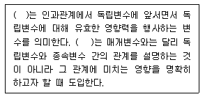
- 선행변수
- 구성변수
- 조절변수
- 외생변수
(정답률: 62%)
49. 개념의 구성요소로 바르지 않은 것은?
- 일반적 합의
- 정확한 정의
- 가치중립성
- 경헙적 준거들
(정답률: 42%)
50. 변수와 측정수준의 연결로 올바른 것은?
- 빈곤율-명목변수
- 직업분류-서열변수
- 청년실업자수-비율변수
- 야구선수의 등번호-등간변수
(정답률: 67%)
51. 사회과학연구에서 같은 개념을 반복 측정하였을 때 같은 측정값을 얻게 될 가능성은 무엇인가?
- 신뢰도
- 타당도
- 정확도
- 효과성
(정답률: 80%)
52. 단순무작위표집에 대한 설명으로 바르지 않은 것은?
- 표본이 모집단으로부터 추출된다.
- 모든 요소가 동등한 확률을 가지고 추출된다.
- 구성요소가 바로 표집단위가 되는 것은 아니다.
- 표본확보의 보편적인 방법은 난수표를 사용하는 것이다.
(정답률: 69%)
53. 창의성을 측정하기 위해 새롭게 개발된 측정도구의 수렴타당도(convergent v- alidity)가 높은 경우는 무엇인가?
- 새로운 창의성 측정도구와 기존의 창의성 측정도구로 측정된 점수들 간의 상관이 높은 경우
- 새로운 창의성 측정도구와 지능검사로 측정된 점수들간의 상관이 높은 경우
- 새로운 창의성 측정도구와 예술성 측정도구로 측정된 점수들 간의 상관이 높은 경우
- 새로운 창의성 측정도구와 신체적 능력 측정도구로 측정된 점수들 간의 상관이 높은 경우
(정답률: 69%)
54. 척도의 신뢰도와 타당도의 관계를 표적과 탄착에 비유한 글미이다. 그림에 해당 하는 척도의 특성은 무엇인가?
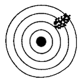
- 타당하나 신뢰할 수 없다.
- 신뢰할 수 있으나 타당하지 않다.
- 타당하고 신뢰할 수 있다.
- 신뢰할 수 없고 타당하지도 않다.
(정답률: 69%)
55. 기준관련타당도(criterion-related vali- dity)와 가장 거리가 먼 것은 무엇인가?
- 동시적 타당도
- 예측적 타당도
- 경험적 타당도
- 이론적 타당도
(정답률: 42%)
56. 표집과 관련된 용어에 대한 설명으로 바르지 않은 것은?
- 모집단이란 우리가 규명하고자 하는 집단의 총체이다.
- 표집단윌나 표집과정의 각 단계에서의 표집대상을 지칭한다.
- 관찰단위란 직접적인 조사대상을 의미한다.
- 표집간격이란 표본을 추출할 때, 추출되는 표집단위와 단위간의 간격을 의미한다.
(정답률: 38%)
57. 층화표집과 집락표집에 관한 설명으로 올바른 것은?
- 층화표집은 모든 부분집단에서 표본을 선정한다.
- 집락표집은 모집단을 하나의 집단으로만 분류한다.
- 집락표집읍 부분집단 내에 동질적인 요소로 이루어진다고 전제된다.
- 층화표집은 부분집단 간에 동질적인 요소로 이루어진다고 전제된다.
(정답률: 55%)
58. 개념의 조직화에 관한 설명과 가장 거리가 먼 것은 무엇인가?
- 개념을 수량화하여 측정 가능하도록 해준다.
- 실증주의 패러다임에서 강조된다.
- 사회현상을 보편적 언어로 정의하는 과정이다.
- 추상적 세계와 경험적 세계를 연결하는 역할을 한다.
(정답률: 37%)
59. 표본크기를 결정할 때 고려하는 사항과 가장 거리가 먼 것은 무엇인가?
- 모집단의 동질성
- 모집단의 크기
- 척도의 유형
- 신뢰도
(정답률: 40%)
60. 계통표집(systematic sampling)의 장점과 가장 거리가 먼 것은 무엇인가?
- 표본의 표집이 간편하다.
- 단순무작위표집의 대용으로 사용될 수 있다.
- 표집틀이 주기성을 갖지 않은 경우에, 모집단을 잘 반영한다.
- 각 층위별 정보를 얻을 수 있다.
(정답률: 52%)
3과목: 사회통계
61. 두 집단의 분산의 동일성 검정에 사용되는 검정통계량 분포는 무엇인가?
- 정규분포
- 이항분포
- 카이제곱분포
- F-분포
(정답률: 37%)
62. 어떤 정책에 대한 찬성여부를 알아보기 위해 400명을 랜덤하게 조사하였다. 무응답이 없다고 했을 때 신뢰수 95% 하에서 통계적 유의성이 만족하려면 적어도 몇 명이 찬성해야 하는지 고르시오. (단, z0.0⑤=1.645, z0.025=1.96)(오류 신고가 접수된 문제입니다. 반드시 정답과 해설을 확인하시기 바랍니다.)
- 2⑤명
- 210명
- 215명
- 220명
(정답률: 34%)
63. 일원분산분석으로 4개의 평균의 차이를 동시에 검정하기 위하여 귀무가설 H0 : μ1=μ2=μ3=μ4이라 정할 때 대립가설 H1은?
- H1 : 모든 평균이 다르다.
- H1 : 적어도 세 쌍 이상의 평균이 다르다.
- H1 : 적어도 두 쌍 이상의 평균이 다르다.
- H1 : 적어도 한 쌍 이상의 평균이 다르다.
(정답률: 63%)
64. 결정계수에 대한 설명과 가장 거리가 먼 것은 무엇인가?
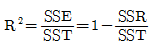
- 0≤R2≤1
- R2이 1에 가까울수록 추정된 회귀식이 총변동량의 많은 부분을 설명한다.
- R2이 0에 가까울수록 추정된 회귀식이 총변동량을 적절히 설명하지 못한다.
(정답률: 63%)
65. 다음 자료에 대한 설명으로 바르지 않은 것은?
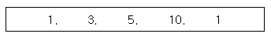
- 분산은 14이다.
- 중위수는 5이다.
- 범위는 9이다.
- 평균은 4이다.
(정답률: 57%)
66. 어느 공정에서 생산되는 제품의 약 40 %가 불량품이라고 한다. 이 공정의 제품 4개를 임의로 추출했을 때, 4개가 불량품일 확률은 얼마인가?
- 16/125
- 64/625
- 62/625
- 16/625
(정답률: 60%)
67. 다음 설명 중 바르지 않은 것은?
- 제1종 오류는 귀무가설이 사실일 때 귀무가설을 기각하는 오류이다.
- 양측검정은 통계량의 변화방향에는 관계없이 실시하는 검정이다.
- 가설검정에서의 유의수준이란 제1종 오류를 범할 때 최대허용오차이다.
- 유의수준을 감소시키면 제2종 오류의 확률 역시 감소한다.
(정답률: 54%)
68. 제1종 오류를 범할 확률의 허용한계를 뜻하는 통계적 용어는 무엇인가?
- 유의수준
- 기각역
- 검정통계량
- 대립가설
(정답률: 71%)
69. 상관계수(피어슨 상관계수)에 대한 설명으로 가장 거리가 먼 것은 무엇인가?
- 선형관계에 대한 설명에 사용된다.
- 상관계수의 부호는 회귀계수의 기울기(b)의 부호와 항상 같다.
- 상관계수의 절대치가 클수록 두 변수의 선형관계가 강하다고 할 수 있다.
- 상관계수의 값은 변수의 단위가 달라지면 영향을 받는다.
(정답률: 43%)
70. 주사위 두 개를 던졌을 때 두 주사위 중 작지 않은 수를 확률변수 X라 할 때 다음 설명 중 바르지 않은 것은?
- 확률변수 X는 이산형 확률변수로 1, 2, 3, 4, 5, 6의 값을 갖는다.
- X=2일 확률은 P(X=2)=2/36이다.
- 표본공간은 S={(1,1), (1,2), (1,3), ..., (6,6)}로 총 36개의 쌍으로 이루어져 있다.
- X<6일 확률은 P(X<6)=25/36이다.
(정답률: 41%)
71. 사회현안에 대한 찬반 여론조사를 실시한 결과 찬성률이 0.8이었다면 3명을 임의 추출했을 때 2명이 찬성할 확률은 얼마인가?
- 0.096
- 0.384
- 0.533
- 0.667
(정답률: 45%)
72. 어느 판매점에서 판애뭔 3명의 판매량 차이를 평균판매량의 관점에서 유의수준 5% 검정하고자 한다. 다음 중 바르지 않은 것은?
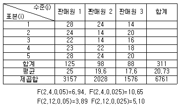
- H1 : μ1=μ2=μ3, H1 : 적어도 하나는 같지 않다.
- 검정통계량 F는 약 5.282이다.
- 처리에 대한 제곱합은 약 145.53이다.
- 세 판매원의 판매량 평균은 동일하다고 할 수 있다.
(정답률: 54%)
73. 다음은 A병원과 B병원에서 각각 6명의 환자를 상대로 하여 환자가 병원에 도착하여 진료서비스를 받기까지의 대기시간(단위 : 분)을 조사한 것이다. 두 병원의 진료서비스 대기시간에 대한 비교로 올바른 것은?
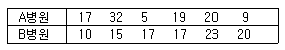
- A병원의 평균=B병원의 평균, A병원의 분산<B병원의 분산
- A병원의 평균=B병원의 평균, A병원의 분산>B병원의 분산
- A병원의 평균>B병원의 평균, A병원의 분산<B병원의 분산
- A병원의 평균<B병원의 평균, A병원의 분산>B병원의 분산
(정답률: 61%)
74. 한 개의 동전을 연속적으로 10번 던지는 실험에서 확률변수 X를 표면이 나온 개수로 정의하면 확률변수 X의 평균은 얼마인가?(오류 신고가 접수된 문제입니다. 반드시 정답과 해설을 확인하시기 바랍니다.)
- 0
- 1
- 5
- 10
(정답률: 67%)
75. 정규분포를 따르는 두 모집단에서 표본을 각각 25개씩 추출하여, 두 집단의 평균 차이를 검정하고자 한다. 모분산은 알려져 있지 않다. 이 때 적용되는 검정통계량의 분포는 얼마인가?
- 정규분포
- t-분포
- F 분포
- 카이제곱분포
(정답률: 55%)
76. 금연교육을 받은 흡연자들 중 많아야 30%가 금연을 하는 것으로 알려져 있다. 어느 금연운동단체에서는 새로 구성한 금연교육 프로그램이 기존의 교육보다 훨씬 효과가 높다고 주장한다. 이 주장을 검정하기 위해 임의로 택한 20명의 흡연자에게 새 프로그램으로 교육을 실시하였다. 검정해야 할 가설은 H0 : p≤0.3 대 H1 : p>0.3(p : 새 금연교육을 받은 후 금연율)이며, 20명 중 금연에 성공한 사람이 많을수록 H1에 대한 강한 증거로 볼 수 있으므로, X를 20명 중 금연한 사람의 수라 하면 기각역은 “X≥c”의 형태이다. 유의수준 5%에서 귀무가설 H0을 기각하기 위해서는 새 금연교육을 받은 20명 중 최소한 몇 명이 금연에 성공해야 하겠는가?
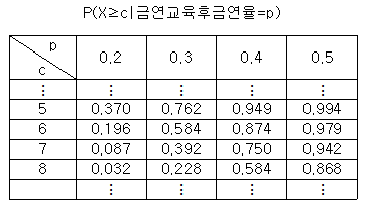
- 5명
- 6명
- 7명
- 8명
(정답률: 39%)
77. 확률변수 X가 이항분포 B(n,p)를 따르고, 그 분산은 25/16이며, X=1일 확률이 X=0일 확률의 4배인 경우 성공확률 p의 값은 얼마인가?
- 3/8
- 4/8
- 5/8
- 6/8
(정답률: 34%)
78. 한국도시연감에 의하면 1998년 1월 1일 당시 한국도시들의 재정자립도 평균은 53.4%이고 표준편차는 23.4이었다. 또한 이 자료에서 서울의 재정자립도는 98.0%로 나타났다. 서울 재정자립도의 표준점수(Z값)는 얼마인가?
- 1.91
- -1.91
- 1.40
- -1.40
(정답률: 53%)
79. 다음 자료는 설명변수(X)와 반응변수(Y )사이에 관게를 알아보기 위하여 조사한 자료이다. 설명변수(X)와 반응변수(Y)사이에 단순회귀모형을 가정할 때, 회귀직선의 기울기에 대한 추정값은?
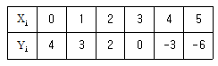
- -2
- -1
- 1
- 2
(정답률: 53%)
80. 다음 중 상관계수(rxy)에 대한 설명으로 바르지 않은 것은?
- 상관계수 rxy는 두 변수 X와 Y의 선형관계의 정도를 나타낸다.
- 상관계수의 범위는 (-1, 1)이다.
- rxy=±1이면 두 변수는 완전한 상관관계에 있다.
- 상관계수 rxy는 두 변수의 이차곡선관계를 나타내기도 한다.
(정답률: 55%)
81. 다음 중 추정량의 성질과 가장 거리가 먼 것은 무엇인가?
- 불편성
- 효율성
- 정규성
- 일치성
(정답률: 47%)
82. 결혼시기가 계절(봄, 여름, 가을, 겨울)별로 동일한 비율인지를 검정하려고 신혼부부 200쌍을 조사하였다. 가장 적합한 가설검정 방법은 무엇인가?
- 카이제곱 적합도검정
- 카이제곱 독립성검정
- 카이제곱 동질성검정
- 피어슨 상관계수검정
(정답률: 42%)
83. k개의 독립변수 xi(i-1,2,∙∙∙,k)와 1개의 종속변수 y에 대한 중회귀모형 y=α+β1x1+∙∙∙+βkxk+e을 고려하여, n개의 자료에 대해 중회귀분석을 실시할 때 총 편차
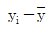
를 분해하여 얻을 수 있는 세 개의 제곱합 ,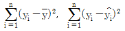
그리고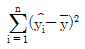
의 자유도를 각각 구하시오.- n,n-k,k
- n-1,n-k,k-1
- n,n-k,k-1
- n-1,n-k-1,k
(정답률: 46%)
84. 어떤 화학 반응에서 생선되는 반응량(Y )이 첨자게의 양(X)에 따라 어떻게 변화하는지를 실험하여 다음과 같은 자료를 얻었다. 변화의 관계를 직선으로 가정하고 최소제곱법에 의하여 회귀직선을 추정할 때 추정된 회귀직선의 절편과 기울기는 얼마인가?
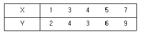
- 절편 0.2, 기울기 1.15
- 절편 1.15, 기울기 0.2
- 절편 0.4, 기울기 1.25
- 절편 1.25, 기울기 0.4
(정답률: 42%)
85. 모집단의 모수 θ에 대한 추정량(esti- mator)으로서 지녀야 할 성질 중 일치추정량에 대한 설명으로 가장 적절하지 않은 것은 무엇인가?(오류 신고가 접수된 문제입니다. 반드시 정답과 해설을 확인하시기 바랍니다.)
- 추정량의 평균이 θ가 되는 추정량을 의미한다.
- 모집단으로부터 추출한 표본의 정보를 모두 사용한 추정량을 의미한다.
- 표본의 크기가 커질수록 추정량과 모수와의 차이에 대한 확률이 0으로 수렴함을 의미한다.
- 여러 가지 추정량 중 분산이 가장 작은 추정량을 의미한다.
(정답률: 33%)
86. 모평균 μ의 95% 신뢰구간을 추정한 결과에 대한 설명으로 올바른 것은?
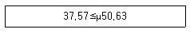
- 이 신뢰구간이 모평균 μ를 포함할 확률은 95%이다.
- 신뢰수준을 90%로 낮추면 신뢰구간은 더 좁아진다.
- 표본크기를 증가시키면 신뢰구간은 더 넓어진다.
- 모분산을 모를 때의 신뢰구간은 알 때보다 더 좁다.
(정답률: 38%)
87. 두 변수 X와 Y에 대해서 9개의 관찰값으로부터 계산된 통계량들이 다음과 같을 때 통계량의 값에서 추정한 단순회귀모형은 무엇인가?
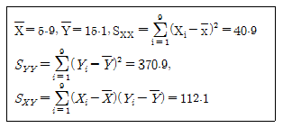
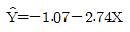
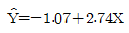
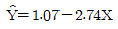
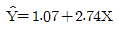
(정답률: 50%)
88. A고등학교의 시험 결과가 아래 표와 같다. 자료에 대한 설명으로 가장 적합한 것을 고르시오.
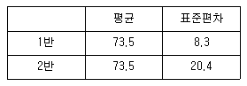
- 1반과 2반의 성적은 평균값이 같으므로 같다.
- 1반은 2반에 비해 성적차이가 크지 않다.
- 2반은 1반에 비해 성적이 좋다.
- 2반의 표준편차가 더 크므로 최고점의 학생은 항상 2반에 있다.
(정답률: 65%)
89. 자료에서 얻은 5개의 관찰값이 다음과 같을 때, 대푯값으로 가장 적합한 것은 무엇인가?
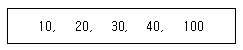
- 최빈수
- 중위수
- 산술평균
- 조화평균
(정답률: 60%)
90. 사분위수 범위에 대한 설명으로 가장 적합한 것은 무엇인가?
- 제2사분위수 - 제1사분위수
- 제3사분위수 - 제2사분위수
- 제3사분위수 - 제1사분위수
- 제4사분위수 - 제1사분위수
(정답률: 76%)
91. 일반적으로 사회조사분석가들은 대규모 모집단으로부터 1000정도의 표본을 무작위로 단 한번 선정하여 구한 표본평균도 그 표본이 추출된 모집단의 평균을 정확히 추정해 줄 수 있다고 확신하고 있다. 이들은 어떤 원리에 근거하여 이러한 확신을 하고 있는 것인가?
- Chebycheff 부등식(Chebycheff's Ine- quality)
- 중심극한정리(Central Limit Theorem)
- 신뢰구간(Confidence Interval)
- 추론(Inference)
(정답률: 65%)
92. 표본의 크기가 커짐에 따라 확률적으로 모수에 수렴하는 추정량은 무엇인가?
- 불편추정량
- 유효추정량
- 일치추정량
- 충분추정량
(정답률: 44%)
93. 다음은 중회귀식
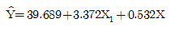
의 회귀계수 표이다. ( )에 알맞은 값은 무엇인가?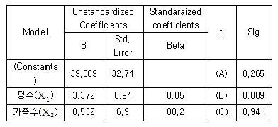
- A=1.21, B=3.59, C=0.08
- A=2.65, B=0.09, C=9.41
- A=10.21, B=36, C=0.8
- A=39.69, B=3.96, C=26.5
(정답률: 52%)
94. 다음은 어느 공장의 요일에 따른 직원들의 지각 건수이다. 지각 건수가 요일별로 동일한 비율인지 알아보기 위해 카이제곱(X2)검정을 실시할 경우, 이 자료에서 X2값은 얼마인지 고르시오.
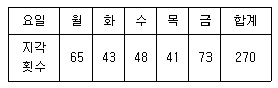
- 14.96
- 16.96
- 18.96
- 20.96
(정답률: 45%)
95. 분포의 모양과 확률에 관한 설명으로 올바른 것은?
- 분포의 모양이 어떠하든지 평균으로부터 k표준편차 이상 떨어진 부분에서 자료가 관찰될 확률은 같다.
- 분포의 모양이 정규분포에 가까울수록 평균으로부터 k표준편차 이내에 있는 자료가 관찰될 확률은 더 낮아진다.
- 분포의 모양이 정규분포에 가까울수록 평균으로부터 k표준편차 이상 떨어진 자료가 관찰될 확률은 더 낮아진다.
- 분포의 모양이 정규분포에 가까울수록 평균으로부터 k표준편차 이상 떨어진 자료가 관찰될 확률은 더 높아진다.
(정답률: 52%)
96. 서울지역 고등학생 500명의 키를 측정한 자료에서 중앙값과 평균값이 같을 경우, 이에 대한 설명으로 가장 적절한 것은 무엇인가?
- 자료의 분포형태는 좌우 대칭이다.
- 자료는 표준정규분포에 따른다.
- 자료에는 극대 이상값이 많지 않다.
- 자료의 대푯값은 중앙값이 더 바람직하다.
(정답률: 26%)
97. 어느 대학교의 압학정원이 1587명인 한 단과대학에 10000명이 지원을 하였다. 지원자들의 시험점수는 평균이 340점, 표준편차가 20점인 정규분포를 따른다고 할 때 합격 가능한 최저 점수를 구하면 얼마인가?
- 340
- 350
- 360
- 370
(정답률: 35%)
98. 다음은 부분적으로 완성된 분산분석표를 나타낸다. 이 때 F-값은?
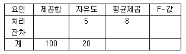
- 1.5
- 2.0
- 2.5
- 3.0
(정답률: 56%)
99. 일원배치 분산분석을 적용할 내용과 가장 거리가 먼 것은 무엇인가?
- 어느 화확회사에서 3개 제조업체에서 생산된 기계로 원료를 혼합하는데 소요되는 평균시간이 동일한지를 검정하기 위하여 소요시간(분)자료를 수집하였다.
- 소기업 경영연구에 실린 한 논문은 자영업자의 스트레스가 비자영업자 보다 높다고 결론을 내렸다. 5점 척도로 된 15개 항목으로 직무스트레스를 부동산중개업자, 건축가, 증권거래인들을 각각 15명씩 무작위로 추출하여 조사하였다.
- 어느 회사에 다니는 회사원은 입사시 학점이 높은 사람일수록 급여를 많이 받는다고 알려져 있다. 30명을 무작위로 추출하여 평균평점과 월급여를 조사하였다.
- A구, B구, C구 등 3개 지역이 서울시에서 아파트 가격이 가장 높은 것으로 나타났다. 각 구마다 15개씩 아파트매매가격을 조사하였다.
(정답률: 53%)
100. 다음 중 중심위치의 척도와 가장 거리가 먼 것은 무엇인가?
- 중앙값
- 평균
- 표준편차
- 최빈수
(정답률: 55%)